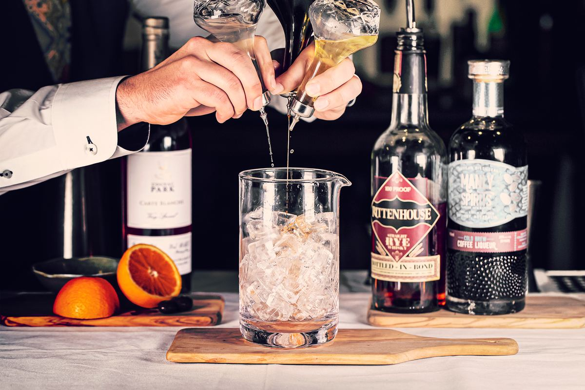

Vino & Cocktails
Wine & Cocktails
The wine list is entirely Italian, built around some of the team’s favorite wineries and regions. Not sure where to start? Your server will gladly suggest a bottle, and any wine you don’t finish can be recorked to take home.
Al Calice
Wine by the Glass
Spumante
- FRICO10Lambrusco · MV · Veneto
- SARACCO12Moscato d’Asti · 2025 · Piedmont
- BANFI12Brut, Metodo Classico Spumante · MV · Piemonte
- SORELLE BRONCA16Extra Dry, Valdobbiadene Prosecco Superior · MV · Veneto
Rosato
- ERCOLE10Barbera, Dolcetto Rosato · 2025 · Piedmont
- CORVEZZO12Prosecco Rosato · MV · Veneto
- TORRE ZAMBRA12Incastro Rose · 2025 · Abruzzo
Bianco
- ERCOLE10Cortese, Chardonnay, Sauvignon Blanc · 2024 · Piedmont
- BENVOLIO14Pinot Grigio · 2024 · Friuli
- ERSTE & NEUE14Sauvignon Blanc · 2025 · Alto Adige
- PETER ZEMMER14Chardonnay · 2025 · Piedmont
- FONTANAVECCHIA16Falanghina del Sannio “BjandoRe” · 2025 · Campania
Rosso
- ERCOLE10Barbera · 2024 · Piedmont
- ADLER14Pinot Noir · 2023 · Alto Adige
- TORRE ZAMBRA14Montepulciano d'Abruzzo · 2024 · Abruzzo
- RENZO MASSI16Chianti Riserva · 2022
- AVIGNONESI16Sangiovese, Cabernet Sauvignon, Merlot “Cantaloro” · 2024 · Tuscany
- FRANCO SERRA22Barolo · 2021 · Piedmont

Recorked to go
Take the rest home
Any bottle you buy can be recorked so you can enjoy the rest later.
La Cantina
Wine by the Bottle
Arranged by region, from the Alps to the islands.
Spumante
- PIZZOLATO FIELDS30Brut, Prosecco Rosato · MV · Veneto
- SARACCO40Moscato d’Asti · 2025 · Piedmont
- CORVEZZO42Prosecco Rosato · MV · Veneto
- BANFI44Brut, Metodo Classico Spumante · MV · Piemonte
- ZANASI52Lambrusco di Sorbara · 2023 · Emilia-Romagna
- CONTADI CASTALDI60Brut Franciacorta · 2025 · Lombardy
- SORELLE BRONCA62Extra dry, Valdobbiadene Prosecco Superior · MV · Veneto
Rosato · Arancia
- TORRE ZAMBRA30Incastro Rose · 2024 · Abruzzo
- ARANSAT44Vino Bianco “Orange” · MV · Friuli
- CARUSO & MININI58Frappato “Frappo” · 2024 · Sicily
Bianco
Friuli Venezia Giulia · Trentino-Alto Adige · Veneto
- SCARPETTA46Pinot Grigio · 2025 · Friuli
- BENVOLIO50Pinot Grigio · 2024 · Friuli
- ERSTE & NEUE50Pinot Bianco · 2025 · Alto Adige
- PETER ZEMMER50Chardonnay · 2025 · Alto Adige
- PETER ZEMMER52Pinot Grigio · 2025 · Alto Adige
- PRA54Soave Classico “Otto" · 2025 · Veneto
- CANTINA TERLAN55Pinot Grigio · 2024 · Terlano, Alto Adige
- ERSTE & NEUE60Sauvignon Blanc · 2025 · Alto Adige
- I CLIVI68Ribolla Gialla · 2022 · Friuli
- PETER ZEMMER82Chardonnay “Buchholz” · 2023 · Alto Adige
- PETER ZEMMER88Pinot Grigio Riserva “Giatl” · 2022 · Alto Adige
- CANTINA TERLAN115Pinot Bianco Riserva “Vorberg" · 2022 · Terlano, Alto Adige
- CANTINA TERLAN168Sauvignon Blanc Riserva “Quarz" · 2023 · Terlano, Alto Adige
- QUINTERRELI GIUSEPPI170Bianco Seco · 2021 · Veneto
Piemonte · Liguria · Valle d’Aosta
- TENUTA SAN LORENZO48Cortese · 2024 · Gavi
- PRODUTTORI DEL GAVI52Cortese · 2022 · Gavi
- ANGELO NEGRO54Unfiltered Arneis “Vino Bianco” · MV · Piedmont
- COLLI TORTONESI62Timorasso Derthona · 2023
- ETTORE GERMANO64Langhe Chardonnay · 2023 · Piedmont
- CORDERO DI MONTEZEMOLO66Langhe Arneis · 2024 · Piedmont
Toscana · Emilia-Romagna · Le Marche · Abruzzo · Umbria
- PODERI DAL NESPOLI48Famoso · 2020 · Emilia-Romagna
- COLLE STEFANO52Verdicchio di Matelica · 2024 · Le Marche
- PIETRAMORE56Pecorino D’Abruzzo Superiore “Cephus” · 2015 · Abruzzo
- EMIDIO PEPE298Trebbiano · 2015 · Abruzzo
- EMIDIO PEPE350Pecorino · 2020 · Abruzzo
- EMIDIO PEPE498Pecorino · 2013 · Abruzzo
Campania · Puglia · Sicilia
- TORINCINO48Fiano di Avellino · 2023 · Campania
- MARESE48Bombino Bianco · 2024 · Puglia
- LOGGIA DELLA SERRA54Greco di Tufo · 2022 · Campania
- GURRIERI56Grillo-Scilia · 2024 · Sicily
- FONTANAVECCHIA60Falanghina del Sannio “BjondoRe” · 2024 · Campania
Rosso
Piemonte
- ANGELO NEGRO45“Vino Rosso” · Unfiltered Brachetto · NV
- LUIGI GIORDANO46Vino Rosso · 2025
- ANGELO NEGRO50“Angelin” · Langhe Nebbiolo · 2024
- GD VAJRA54Dolcetto d’Alba · 2024
- LA MIRAJA60“Le Masche” · Barbera d’Asti · 2022
- LA SPINETTA62“Ca di Pian” · Barbera d’Asti · 2023
- GD VAJRA62Langhe Nebbiolo · 2025
- CANTINE POVERO78“bàtu” · Barbaresco · 2019
- FRANCO SERRA85Barolo · 2021
- STARDE88Barbaresco · 2019
- LA CA NOVA90“Montefico” · Barbaresco · 2020
- CANTINE POVERO90“Priore” · Barolo · 2021
- GD VAJRA98“Albe” · Barolo · 2022
- LUIGI GIORDANO98“Cavana" · Barbaresco · 2022
- SCHIAVENZA110“Perno” · Monforte d’Alba · Barolo · 2021
- SCHIAVENZA120“Prapo” · Serralunga d’Alba · Barolo · 2021
- SCHIAVENZA125“Cerretta” · Serralunga d’Alba · Barolo · 2021
- CASTELLO DI VERDUNO126Barbaresco · 2022
- CORDERO DI MONTEZEMOLO250“Gattera” · Barolo · 2019
- CORDERO DI MONTEZEMOLO272“Gattera” · Barolo · 2018
- NERVI CONTERNO298Gattinara “Vigna Molsino" · Barolo · 2018
- ODDERO410Monforte d’Alba Mondoca Riserva “Bussia Vigna” · Barolo · 2017
- AZELIA426Serralunga d’Alba “Bricco Voghera" · Barolo · 2010
- ODDERO520Serralunga d’Alba Riserva “Vigna Rionda" · Barolo · 2015
- ODDERO530Serralunga d’Alba Riserva “Vigna Rionda" · Barolo · 2014
Veneto · Emilia-Romagna
- SAN MICHELE40Valpolicella Classico · 2023 · Veneto
- LENOTTI45Valpolicella Classico · 2024 · Veneto
- BUSSOLA58Ripasso Valpolicella · 2020 · Veneto
- CESARI96Corvina “Jema" · 2016 · Veneto
- FAMIGLIA PASQUA148Amarone Della Valpolicella · 2019 · Veneto
- CESARI268Amarone Della Valpolicella “Bosan” · 2013 · Veneto
Lombardy · Friuli Venezia Giulia · Alto Adige
- ADLER50Pinot Noir · 2023 · Alto Adige
- WEINGUT NIKLAS54Lagrein · 2022 · Alto Adige
- CANTINA TERLAN78Pinot Noir · 2023 · Terlano, Alto Adige
- I CLIVI78Cabernet Franc · 2023 · Friuli
- I CLIVI80Schioppenttio · 2023 · Venezia Giulia
- GARAGISTI ANONIMI FRIULANI98Cabernet, Merlot “Neri GAF Rosso” · 2021 · Friuli
- CANTINA TERLAN112Pinot Noir “Monticol” · 2022 · Terlano, Alto Adige
- ARPEPE114Rosso Di Valtellina · 2020 · Lombardy
- CANTINA TERLAN168Lagrein Riserva “Porphyr" · 2020 · Terlano, Alto Adige
Le Marche · Abruzzo · Umbria
- TORRE ZAMBRA52Montepulciano d'Abruzzo · 2024 · Abruzzo
- TORRE ZAMBRA68Montepulciano d’Abruzzo Riserva · 2021 · Abruzzo
- GORETTI98Sagrantino di Montefalco · 2013 · Umbria
Campania · Basilicata · Puglia
- PASQUA48Primitivo “Desire Lush & Zin” · 2024 · Puglia
- IL BRUNO DEI VESPA52Primitivo, Salento · 2023 · Puglia
- FONTANAVECCHIA54Aglianico Del Taburno “TabaRosso” · 2020 · Campania
- GRIFALCO DELLA LUCANIA98Aglianico Del Vulture “Daginestra" · 2018 · Basilicata
Calabria · Sicilia · Sardegna
- TORRE ARAGONESE52Calabria Rosso · 2022 · Calabria
- FIRRIATO CHIARAMONTE54Nero D' Avola · 2023 · Sicily
- TORRE ARAGONESE56Rosso “Ciro Riserva" · 2019 · Calabria
- MURGO58Etna Rosso · 2023 · Sicily
- GURRIERI62Frappato · 2024 · Sicily
- CONTINI64Cannonau di Sardegna Riserva “INU” · 2018 · Sardegna
- GIROLAMO RUSSO94Etna Rosso “a Rina" · 2022 · Sicily
- TERRE NERE138Etna Rosso “Guardiola" · 2022 · Sicily
Toscana · Montalcino · Montepulciano| Bolgheri
- RENZO MASSI50Chianti Riserva · 2022
- BARTOLI GIUSTI50Rosso di Montalcino · 2024 · Montalcino
- AVIGNONESI60Sangiovese, Cabernet Sauvignon, Merlot “Cantaloro” · 2024 · Tuscany
- TENUTA DI ARCENO62Chianti Classico · 2023
- ISTINE64Chianti Classico · 2023
- TENUTA DI ARCENO68Merlot “Il Fauno di Arcanum" · 2023 · Tuscany
- AVIGNONESI68Sangiovese “Vino Nobile di Montepulciano” · 2020 · Montepulciano
- BANFI74Bolgheri Rosso “Aska” · 2022 · Bolgheri
- POGGIO LANDI78Rosso di Montalcino · 2023 · Montalcino
- CASTELLO DI MELETO82Chianti Riserva · 2020
- NITTARDI88Maremma Toscana “A.D. Astra” · 2023 · Tuscany
- TENUTA DI SESTA98Brunello di Montalcino · 2021 · Montalcino
- CARPINETO FARNITO98Cabernet Sauvignon · 2019 · Tuscany
- TENUTA DI ARCENO112Merlot “Valadorna" · 2018 · Tuscany
- LAZZARA120Brunello di Montalcino “Libero” · 2020 · Montalcino
- AVIGNONESI128Merlot “Desidero” · 2021 · Tuscany
- ISTINE130Chianti Riserva “Levigne” · 2022
- VILLA POGGIO SALVI135Brunello di Montalcino Riserva · 2017 · Montalcino
- CASTELLO DI QUERCETO138Chianti Classico Gran Selezione “Il Picchio’” · 2018
- POGGIO LANDI148Brunello di Montalcino · 2021 · Montalcino
- ISTINE148Chianti Gran Selezione Radda “Casanova Della Avia" · 2022
- TENUTA SAN GUIDO150Toscana “Guidalberto” · 2023
- TENUTA DI ARCENO172Toscana “Valadorna" · 2013 · Tuscany
- CASANOVA DI NERI195Brunello di Montalcino “White Label” · 2020 · Montalcino
- DONATELLA CINELLI COLOMBINI236Brunello di Montalcino Riserva · 2018 · Montalcino
- FATTORIA LE PUPILLE268Maremma Toscana “Saffredi" · 2022 · Tuscany
- SALICUTTI495Brunello di Montalcino “Teatro” · 2019 · Montalcino
Vintages and availability change. Your server can confirm today’s selection. Current wine list (PDF)
Il Bar
Cocktails, Martinis & Spritz
Signature Cocktails
- Carajillo12espresso, herbal vanilla liqueur
- Sea Breeze16corazon blanco tequila, royal standard rum, grapefruit, tequila, agave, tajin
- Moonsmoke18reposado tequila, mezcal, averna, angostura bitters, orange, elderflower liqueur
- Night at the Theater18buffalo trace bourbon, chai syrup, cardamom bitters
- Summer Bliss18elijah craig bourbon, jasmine green tea syrup, lavender bitters
- Salted Waves18corazon blanco tequila, tanqueray gin, luxardo liqueur, elderflower liqueur, lime, celery, salted coconut foam
Martinis
- Dolce Fragola14outfitters vodka, bauchant, lemon, strawberry simple, sugar rim
- Brian’s Tequini16corazon blanco tequila, bauchant, lemon, lime
- Midnight in Milano16outfitters vodka, amarula, creme de cacao, chocolate drizzle
- Dirty Chai16outfitters vodka, borgetti, decaf espresso, chai syrup
- Espresso Martini Affogato20outfitters vodka, borgetti, decaf espresso, vanilla gelato
Spritz
- Hugo Spritz12wild elderflower, mint, prosecco
- Sangria14lambrusco, orange, cinnamon apple, rosemary
- La Pesca14peach puree, lemon, prosecco
- Cappelletti Spritz14strawberry aperitif, basil, prosecco
- Sicilian Soda14ercole barbera, carpana antica, lemon lime soda
- Sarti15blood orange-mango-passion fruit aperitif, prosecco
- Teatro 7516limoncello, lemon, prosecco
- Spritz Pitcher55choice of spritz in a pitcher to share
Low & No ABV
- Veranda Italiana12carpana antica, montenegro, lemon, mint
- Il Paloma Fresca8grapefruit, lime, lemon-lime sodaNA
- Summer in Capri8iced black tea, jasmine, mint, topo chicoNA
- Senza Spritz12giffard sirop apertif, lime, strawberry, sparkling lemon-limeNA